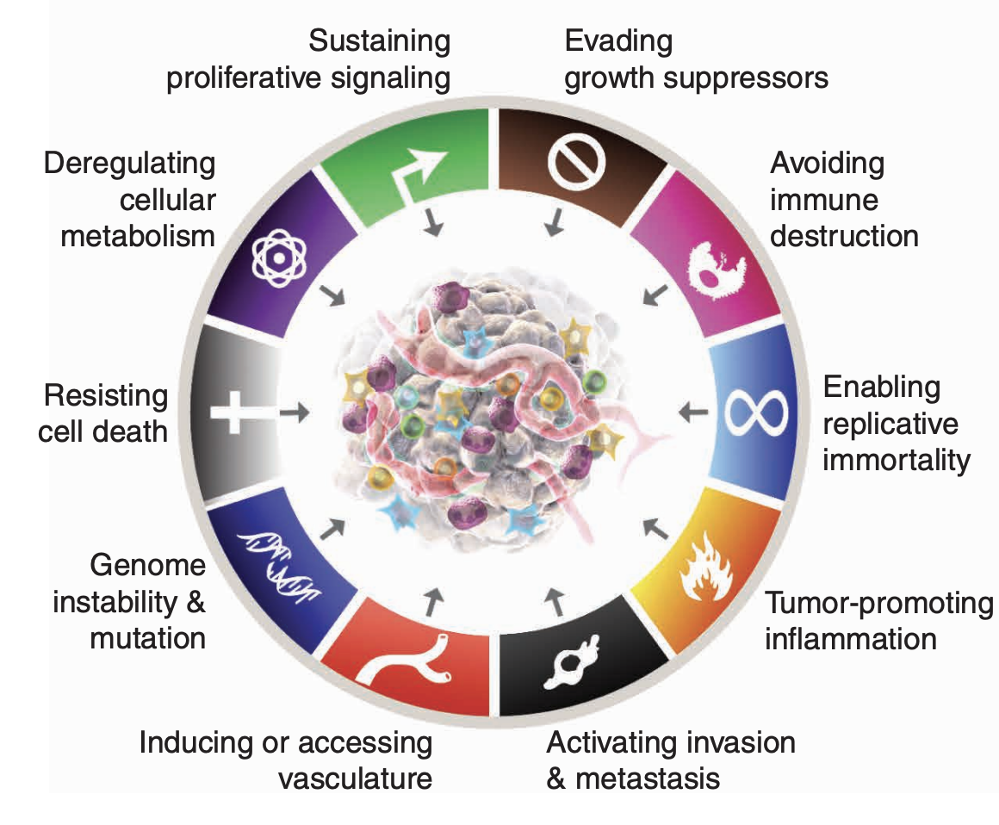
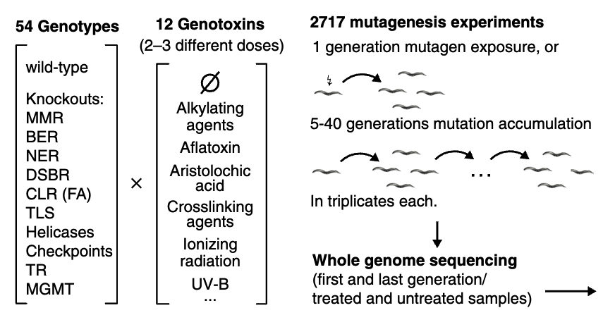
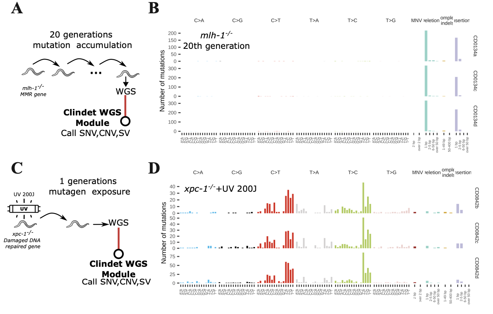
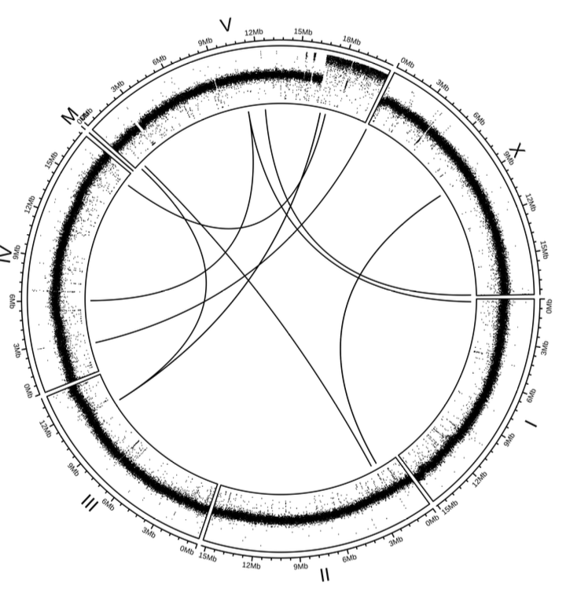

4. Use case IV: Quantifying the contributions of DNA repair defective gene mutations to mutational signatures（C.elegans）#
4.1. Background#
Genome instability is a central feature of tumorigenesis and cancer evolution. Over the past two decades, pan-cancer analyses have shown that many tumors carry characteristic mutational signatures that reflect the underlying DNA damage and repair processes active in the cell. Understanding how defects in DNA repair pathways reshape these signatures is therefore important both biologically and clinically, especially for the development of repair-deficiency biomarkers and treatment strategies (Jennifer Ma, et al. 2018). In humans, however, the causal contribution of a single repair defect is often difficult to isolate. Model organisms such as C. elegans provide a useful experimental system for studying these mechanisms in a more controlled setting.
{kind=link}

In this use case, we re-analyze whole-genome sequencing data from Volkova et,al. to evaluate mutational patterns associated with defects in DNA repair genes such as xpc-1 and mlh-1.
The original study profiled 54 C. elegans genotypes exposed to 12 genotoxins across multiple dose conditions, generating 2717 mutagenesis experiments with matched WGS data. Here we use the ClinDet WGS workflow in tumor-normal paired mode to reproduce representative mutational patterns from a smaller subset of that study. Our focus is on seven mutant samples and their matched controls: (1) three biological replicates of mlh-1 mutants, which are deficient in mismatch repair and propagated for 20 generations; (2) three xpc-1 replicates exposed to UV light; and (3) one mrt-2 mutant, which is defective in telomere maintenance and is expected to accumulate large-scale copy-number and structural alterations through breakage-fusion-bridge cycles.
{kind=link}

4.2. Study design#
This re-analysis uses ten samples:
xpc-1 gene knockout with UV treat.
xpc-1 gene predicted to enable damaged DNA binding activity and single-stranded DNA binding activity. Involved in response to UV. Predicted to be located in nucleus. Predicted to be part of XPC complex and nucleotide-excision repair factor 2 complex. Predicted to be active in cytoplasm. Is expressed in germline precursor cell; intestine; and nervous system. Used to study xeroderma pigmentosum. Human ortholog(s) of this gene implicated in pancreatic cancer; serous cystadenocarcinoma; xeroderma pigmentosum; and xeroderma pigmentosum group C. Orthologous to human XPC (XPC complex subunit, DNA damage recognition and repair factor).
mlh-1 gene knockout.
mlh-1 gene predicted to enable ATP hydrolysis activity. Predicted to be involved in mismatch repair. Predicted to be located in nucleus. Predicted to be part of MutLalpha complex. Human ortholog(s) of this gene implicated in several diseases, including Lynch syndrome (multiple); carcinoma (multiple); and cervix uteri carcinoma in situ. Is an ortholog of human MLH1 (mutL homolog 1). Curator: Ranjana Kishore; Valerio Arnaboldi
mrt-2 gene knockout.
mrt-2 gene predicted to enable damaged DNA binding activity. Involved in DNA metabolic process and intracellular signal transduction. Predicted to be located in nucleus. Predicted to be part of checkpoint clamp complex. Orthologous to human RAD1 (RAD1 checkpoint DNA exonuclease).
Sample |
Genotype |
Generation |
Replicate |
Mutagen |
CD0009b |
mrt-2 |
0 |
0 |
|
CD0009f |
mrt-2 |
20 |
3 |
|
CD0001b |
N2 |
0 |
0 |
|
CD0134a |
mlh-1 |
20 |
2 |
|
CD0134c |
mlh-1 |
20 |
3 |
|
CD0134d |
mlh-1 |
20 |
4 |
|
CD0392a |
xpc-1 |
0 |
0 |
|
CD0842b |
xpc-1 |
1 |
1 |
UV |
CD0842c |
xpc-1 |
1 |
2 |
UV |
CD0842d |
xpc-1 |
1 |
3 |
UV |
4.3. Why this case matters#
This example is useful for two reasons. First, it shows how the WGS workflow can be adapted to a non-human genome with partial tool support. Second, it demonstrates how variant calling, copy-number analysis, and structural-variant analysis can be combined to recover biologically interpretable patterns linked to specific DNA repair defects.
4.4. Download data#
First, Create a folder named project/worm_WGS in your home directory and activate the Clindet conda environment.
mkdir -p ~/projects/worm_WGS
cd ~/projects/worm_WGS
conda activate clindet
To facilitate data download, we provide a metadata file worm_meta.tsv compiled from the original datasets. Please download this file and place it in the ~/projects/worm_WGS/ data directory. Afterwards, you can download the corresponding FASTQ files by using parallel (~ 35GB):
cd ~/projects/worm_WGS
mkdir -p data && cd data
parallel --colsep '\t' wget -q -c -O {12} {10} :::: worm_meta.tsv
4.6. Modify YAML file#
if you are not familiarity with yaml format, see ((en)[https:/yaml.org/], (zh)[https:/www.runoob.com/w3cnote/yaml-intro.html])
Users should configure the C.elegans genome settings in the config.yamlfile and ensure all referenced files are downloaded before beginning the analysis.
4.6.1. modify config.yaml for mutation detection#
Add WBcel235 config files to
config['resource']section
WBcel235:
REFFA: "/AbsoPath/of/clindet/folder/resources/ref_genome/WBcel235/WBcel235_genome.fa"
GTF: "/AbsoPath/of/clindet/folder/resources/ref_genome/WBcel235/Caenorhabditis_elegans.WBcel235.114.gtf"
GENOME_BED: ""
DBSNP: ""
DBSNP_GZ: "/AbsoPath/of/clindet/folder/reference/WBcel235/c_elegans.dbsnp.vcf.gz"
DBSNP_INDEL: "/AbsoPath/of/clindet/folder/reference/WBcel235/worm_fake_dbsnp.vcf.gz"
MUTECT2_VCF: "/AbsoPath/of/clindet/folder/reference/WBcel235/c_elegans.dbsnp.vcf.gz"
WGS_PON: ""
REFFA_DICT: "/AbsoPath/of/clindet/folder/resources/ref_genome/WBcel235/WBcel235_genome.dict"
add WBcel235 config
config['softwares']['vcf2maf']['build_version']andconfig['softwares']['vcf2maf']['vep']section
build_version:
WBcel235: "WBcel235"
vep:
WBcel235:
vep_data: "/AbsoPath/of/clindet/folder/resources/ref_genome/WBcel235/vep"
vep_path: "/Your/Path/of/vep/bin"
cache_version: "113"
species: "homo_sapiens"
Very Important: To ensure the vcf2maf tool can properly execute and complete variant annotation, users need to modify the code at line 466 in the vcf2maf.pl script (AbsoPath of conda env clindet_vep /bin/vcf2maf.pl).
Original code:
$vep_cmd .= " --buffer_size $buffer_size --sift b --ccds";
Modified code
# $vep_cmd .= " --no_stats --buffer_size $buffer_size --sift b --ccds";
$vep_cmd .= " --no_stats --buffer_size $buffer_size --ccds";
# set sift to false if not human or mouse data
$vep_cmd .= ( $species ~~ ['homo_sapiens','mus_musculus'] ? " --sift b" : " " );
4.7. Workflow-specific notes#
Compared with the human WGS workflow, this case requires a few additional adjustments:
A non-human reference bundle must be added for
WBcel235.Annotation settings for
vcf2mafand VEP must be adapted for the worm reference.Some human-oriented tools may require fake or substitute resources to complete successfully.
Certain stages, such as conpair-based contamination checks and case report generation, are intentionally disabled in this example.
4.8. Prepare the YAML workflow config#
For this project, you only need to prepare the sample sheet and a YAML workflow config. A project-specific snake_wgs_worm.smk file is no longer required.
Create a CSV file named
pipe_wgs.csvin the~/projects/worm_WGSdirectory with the following content:
Tumor_R1_file_path,Tumor_R2_file_path,Normal_R1_file_path,Normal_R2_file_path,Sample_name,Target_file_bed,Project
/AbsoPath/of/projects/worm_WGS/data/CD0009f_R1.fq.gz,/AbsoPath/of/projects/worm_WGS/data/CD0009f_R2.fq.gz,/AbsoPath/of/projects/worm_WGS/data/CD0009b-1_R1.fq.gz,/AbsoPath/of/projects/worm_WGS/data/CD0009b-1_R2.fq.gz,mrt-2,,C_elegans
/AbsoPath/of/projects/worm_WGS/data/CD0842b_R1.fq.gz,/AbsoPath/of/projects/worm_WGS/data/CD0842b_R2.fq.gz,/AbsoPath/of/projects/worm_WGS/data/CD0392a_R1.fq.gz,/AbsoPath/of/projects/worm_WGS/data/CD0392a_R2.fq.gz,CD0842b,,C_elegans
/AbsoPath/of/projects/worm_WGS/data/CD0842c_R1.fq.gz,/AbsoPath/of/projects/worm_WGS/data/CD0842c_R2.fq.gz,/AbsoPath/of/projects/worm_WGS/data/CD0392a_R1.fq.gz,/AbsoPath/of/projects/worm_WGS/data/CD0392a_R2.fq.gz,CD0842c,,C_elegans
/AbsoPath/of/projects/worm_WGS/data/CD0842d_R1.fq.gz,/AbsoPath/of/projects/worm_WGS/data/CD0842d_R2.fq.gz,/AbsoPath/of/projects/worm_WGS/data/CD0392a_R1.fq.gz,/AbsoPath/of/projects/worm_WGS/data/CD0392a_R2.fq.gz,CD0842d,,C_elegans
/AbsoPath/of/projects/worm_WGS/data/CD0134a_R1.fq.gz,/AbsoPath/of/projects/worm_WGS/data/CD0134a_R2.fq.gz,/AbsoPath/of/projects/worm_WGS/data/CD0097a_R1.fq.gz,/AbsoPath/of/projects/worm_WGS/data/CD0097a_R2.fq.gz,CD0134a,,C_elegans
/AbsoPath/of/projects/worm_WGS/data/CD0134c_R1.fq.gz,/AbsoPath/of/projects/worm_WGS/data/CD0134c_R2.fq.gz,/AbsoPath/of/projects/worm_WGS/data/CD0097a_R1.fq.gz,/AbsoPath/of/projects/worm_WGS/data/CD0097a_R2.fq.gz,CD0134c,,C_elegans
/AbsoPath/of/projects/worm_WGS/data/CD0134d_R1.fq.gz,/AbsoPath/of/projects/worm_WGS/data/CD0134d_R2.fq.gz,/AbsoPath/of/projects/worm_WGS/data/CD0097a_R1.fq.gz,/AbsoPath/of/projects/worm_WGS/data/CD0097a_R2.fq.gz,CD0134d,,C_elegans
Create
~/projects/worm_WGS/worm_WGS.yamlwith the following structure:
Note
project:
output_dir: '~/projects/worm_WGS'
genome_version: 'WBcel235'
recal_BQSR: False
vcf2maf: 'raw'
sample_sheet: '~/projects/worm_WGS/pipe_wgs.csv'
run_params:
somatic_caller_list:
- HaplotypeCaller
- strelkasomaticmanta
- caveman
- muse
- cgppindel_filter
- varscan2
stages: []
germ_caller_list:
- strelkamanta
- caveman
somatic_cnv_list:
- sequenza
somatic_sv_list:
- svaba
- gridss
- delly
- Manta
In this non-human WGS example, recal_BQSR is set to False. Base quality recalibration is generally not recommended here because it increases runtime and storage usage while usually providing limited benefit for the final results. We also leave run_params.stages empty because non-human data in this workflow does not support conpair-based sample pairing checks or case report generation.
4.9. Configuration rationale#
The YAML configuration in this example is intentionally conservative. We keep run_type=wgs and genome_version=WBcel235, disable recal_BQSR, and leave stages empty to avoid unsupported human-oriented reporting steps. The selected callers emphasize broad somatic SNV/INDEL discovery together with structural-variant recovery in a non-human setting, while sequenza is retained as the CNV method shown in this use case.
4.10. Run clindet#
There are two ways to run ClinDet in this example:
run on a local node
submit to HPC through slurm
4.10.1. Run on local node#
nohup snakemake -c 30 --config run_type=wgs \
--configfile ~/projects/worm_WGS/worm_WGS.yaml \
--rerun-triggers mtime --benchmark-extended \
--use-singularity --singularity-args "--bind /your/home/path:/your/home/path" \
--latency-wait 300 --use-conda --conda-frontend conda -k >> ~/projects/worm_WGS/worm.out &
4.10.2. Submit to HPC use slurm#
We provide a Slurm config.yaml file under the clindet/workflow/config_slurm folder.
nohup snakemake -c 30 --config run_type=wgs \
--configfile ~/projects/worm_WGS/worm_WGS.yaml \
--profile workflow/config_slurm \
--rerun-triggers mtime --benchmark-extended \
--use-singularity --singularity-args "--bind /your/home/path:/your/home/path" \
--latency-wait 300 --use-conda --conda-frontend conda -k >> ~/projects/worm_WGS/worm.out &
4.11. Results#
4.11.1. Overview of output#
For the final output directory structure, please refer to the corresponding section in Use Case One (case_one). In the following section, we present the biological findings derived from these raw outputs.
4.11.2. What to expect#
For this case, the most informative outputs are the merged somatic MAF files, the sequenza copy-number results, and the SV calls from svaba, gridss, delly, and Manta. Successful completion should allow readers to compare small-variant patterns across genotypes and to inspect whether the mrt-2 sample shows chromosome-scale rearrangement signals consistent with the published study.
4.11.3. Mutation calling and signature analysis#
For somatic mutation detection, we employed multiple variant callers, including CaVEMan, MuSE, Pindel, Strelka2, and Manta. Copy number variations were identified using FragCounter, while structural variations were detected using Delly. Our analysis revealed that the mlh-1 mutant exhibited a mutational signature predominantly characterized by short insertions and deletions (indels), consistent with its deficiency in mismatch repair. The xpc-1 mutant, involved in nucleotide excision repair, showed an inability to correct UV-induced pyrimidine dimers, resulting in a mutational profile dominated by C>T (or T>C) transitions and short (1–5 bp) indels. Furthermore, in the mrt-2 mutant, Clindet identified CNVs and SVs localized to chromosome V, consistent with previously reported observations by Volkova et,al..
{kind=link}

4.11.4. CNV and SV results#
Furthermore, in the mrt-2 mutant, Clindet identified CNVs and SVs localized to chromosome V, consistent with previously reported observations by Volkova et,al..
{kind=link}

4.12. Optional: variant calling with CaVEMan and cgpindel#
When analyzing non-human sequencing data, tools like CaVEMan and Pindel require specific configurations to run successfully. However, some species may lack certain necessary data files, such as panel-of-normal results. As an alternative, a fake file can be provided to allow the pipeline to execute, but this may compromise the accuracy of variant calling results. Use this approach at your own risk.
4.13. Common pitfalls#
genome_versionin the YAML file must exactly match the key added to the globalconfig.yamlresource section.Paths in
sample_sheetshould be absolute and must point to files visible inside the Singularity bind mount.The non-human VEP and
vcf2mafsettings must be updated before annotation will run successfully.Some callers may execute with workaround resources but still produce lower-confidence results than in the human workflows.
These configuration files can be prepared according to the software documentation for CaVEMan and cgpPindel. In this example, we will use configurations based on the human b37 reference genome (ensure you have completed the setup from use case 1).
4.13.1. Setup a fake dbsnp.vcf file#
Users can create a dummy dbsnp.vcf file, compress it with bgzip (while retaining the original VCF file), and build an index for the compressed file using tabix. Then, replace the paths under the config[‘resources’][‘WBcel235’]section as follows:
Set both [‘DBSNP_GZ’]and [‘DBSNP_INDEL’]to the absolute path of the compressed file (e.g., dbsnp.vcf.gz).
Set [‘DBSNP’]to the path of the uncompressed VCF file (e.g., dbsnp.vcf).
Set [‘MUTECT2_VCF’]to the absolute path of the compressed file as well.
The specific content of this dummy VCF file should be structured as follows:
##fileformat=VCFv4.2 ##fileDate=20190602 ##contig=<ID=I,length=15072434> ##contig=<ID=II,length=15279421> ##contig=<ID=III,length=13783801> ##contig=<ID=IV,length=17493829> ##contig=<ID=V,length=20924180> ##contig=<ID=X,length=17718942> ##contig=<ID=MtDNA,length=13794> #CHROM POS ID REF ALT QUAL FILTER INFO
4.13.2. Modify config.yaml for CaVEMan and cgppindel#
In this example, we use the CaVEMan and cgppindel configuration for the human reference genome (b37). First, duplicate the content under the ['b37'] key within the config['singularity']['caveman'] section of the config.yaml file, and change the key name to WBcel235.
To enable the CaVEMan flagging process, you need to create a flag.vcf.config_Celegans.ini file in the directory /AbsoPath/of/clindet/folder/resources/ref_genome/b37/Sanger/SNV_INDEL_ref/caveman/flagging/ . Using flag.to.vcf.convert.ini file as a template, replace all instances of HUMAN_**with CELEGANS_**, and update the value of [‘flag’][‘c’] to the path of the flag.vcf.config_Celegans.ini file.
The final content under the config['singularity']['caveman'] and config['singularity']['cgppindel'] section should appear as shown below:
CaVEMan:
WBcel235:
ignorebed: "/AbsoPath/of/clindet/folder/reference/WBcel235/worm_ignore.bed"
flag:
c: "/AbsoPath/of/clindet/folder/reference/b37/SNV_INDEL_ref/caveman/flagging/flag.vcf.config_Celegans.ini"
v: "/AbsoPath/of/clindet/folder/reference/b37/SNV_INDEL_ref/caveman/flagging/flag.to.vcf.convert.ini"
u: "/AbsoPath/of/clindet/folder/reference/b37/SNV_INDEL_ref/caveman/flagging"
g: "/AbsoPath/of/clindet/folder/reference/b37/SNV_INDEL_ref/caveman/flagging/germline.bed.gz"
b: "/AbsoPath/of/clindet/folder/reference/b37/SNV_INDEL_ref/caveman/flagging"
ab: "/AbsoPath/of/clindet/folder/reference/b37/SNV_INDEL_ref/caveman/flagging"
s: "Celegans"
cgppindel:
WBcel235:
species: "C_elegans"
genes: "/AbsoPath/of/clindet/folder/resources/ref_genome/b37/Sanger/refarea_pindel/codingexon_regions.indel.bed.gz"
softfil: "/AbsoPath/of/clindet/folder/resources/ref_genome/b37/Sanger/SNV_INDEL_ref/pindel/WXS_Rules.lst"
simrep: "/AbsoPath/of/clindet/folder/resources/ref_genome/b37/Sanger/SNV_INDEL_ref/pindel/simpleRepeats.bed.gz"
normal_panel: "/AbsoPath/of/clindet/folder/resources/ref_genome/b37/Sanger/SNV_INDEL_ref/pindel/pindel_np.gff3.gz"
WES:
filter: "/AbsoPath/of/clindet/folder/resources/ref_genome/b37/Sanger/SNV_INDEL_ref/pindel/WXS_Rules.lst"
normal_panel: "/AbsoPath/of/clindet/folder/resources/ref_genome/b37/Sanger/SNV_INDEL_ref/pindel/pindel_np.gff3.gz"
WGS:
filter: "/AbsoPath/of/clindet/folder/resources/ref_genome/b37/Sanger/SNV_INDEL_ref/pindel/WGS_Rules.lst"
normal_panel: "/AbsoPath/of/clindet/folder/resources/ref_genome/b37/Sanger/SNV_INDEL_ref/pindel/pindel_np.gff3.gz"